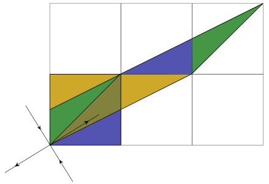
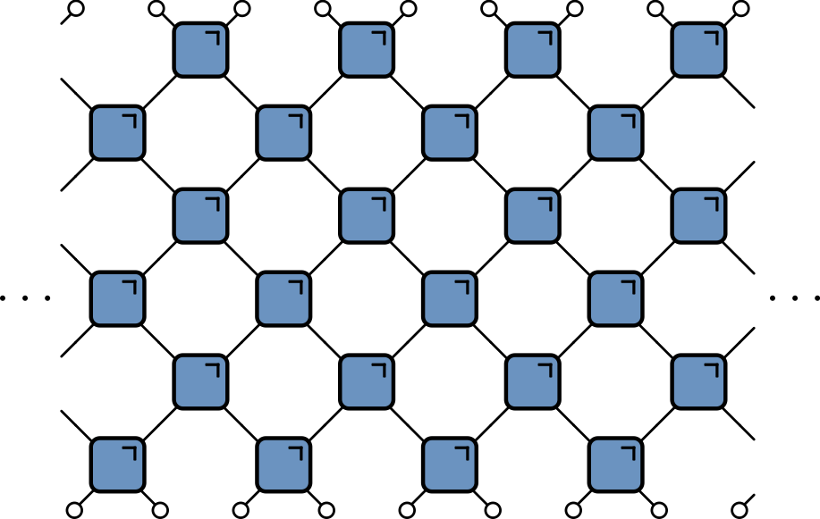

Space-time dual cat models
Subtitle goes here
Austen Lamacraft (Cambridge) and Pieter Claeys (Dresden)
= require ("p5" )function * createSketch (sketch, divId, slideId) {const element = DOM. element ('div' ); . setAttribute ('id' , divId); // p5.js really likes its target element to already be in the DOM, not just // floating around detached. So, before we call P5, we yield it, which puts // in the DOM. yield element; // This is ‘instance mode’ in p5 jargon: instead of relying on lots of // globals, we create a sketch that has its own copy of everything under p5. const instance = new P5 (sketch, element, true ); // This detects whether we are on the relevant slide (by slideId) and stops the loop if not . on ('slidechanged' , event => {if (!! event . currentSlide . querySelector ("#" + slideId)) {. loop ()else {. noLoop (); // I think this next part is only if you use observable to update a sketch... // This is the tricky part: when you run P5(sketch, element), it starts a // loop that updates the drawing a bunch of times a second. If we were just // to call P5 repeatedly with different arguments, the loops would all keep // running, one on top of the other. So what we do is we use this cell // as a generator, and then when that generator is interrupted, like // when you update the code in the sketch() method, then we call instance.remove() // to clean it up. try {while (true ) {yield element; finally {. remove ();
Space-time dual cat and clock maps
Austen Lamacraft (Cambridge) and Pieter Claeys (Dresden)
[austen.uk/#talks]s(https://austen.uk/#talks) for slides
Motivation: kicked Ising model
Time dependent Hamiltonian with kicks at t=0,1,2,\ldots
\begin{aligned}
H_{\text{KIM}}(t) = H_\text{I}[\mathbf{h}] + \sum_{m}\delta(t-n)H_\text{K}\\
H_\text{I}[\mathbf{h}]=\sum_{j=1}^L\left[J Z_j Z_{j+1} + h_j Z_j\right],\qquad H_\text{K} &= b\sum_{j=1}^L X_j
\end{aligned}
“Stroboscopic” form of U(t)=\mathcal{T}\exp\left[-i\int^t H_{\text{KIM}}(t') dt'\right]
\begin{aligned}
U(n_+) &= \left[U(1_+)\right]^n,\qquad U(1_-) = K I_\mathbf{h}\\
I_\mathbf{h} &= e^{-iH_\text{I}[\mathbf{h}]}, \qquad K = e^{-iH_\text{K}}
\end{aligned}
Unitary circuit
Another class of discrete time dynamics
KIM as a circuit
\begin{aligned}
\mathcal{K} &= \exp\left[-i b X\right]\\
\mathcal{I} &= \exp\left[-iJ Z_1 Z_2 -i \left(h_1 Z_1 + h_2 Z_2\right)/2\right]
\end{aligned}
Expectation values
Evaluate \bra{\Psi}\mathcal{O}\ket{\Psi}=\bra{\Psi_0}\mathcal{U}^\dagger\mathcal{O}\mathcal{U}\ket{\Psi_0} for local \mathcal{O}
= require ("svg.js" )= require ("d3@6" )
{ ojs} import { expectation } from ' . /js/expectation . js' < div id= "svg-container" ></ div> `. xml ( ' ./ images/ expectation. svg ' ) . then ( data => { . select ( "#svg-container" ). node (). append ( data. documentElement ) }); // graphic = { // const test = await FileAttachment("text.txt").text(); // console.log(test) // const data = (new DOMParser).parseFromString(test, "image/svg+xml"); // d3.select("#svg-container").node().append(data.documentElement) // } = SVG ( ' #gate' ) = circuit. findOne ( ' #gate' ) = ' #5594 c3' = ' #d84141' // Hide original = circuit. findOne ( ' #gate- and- contractions' ). hide () // The four contractions = circuit. findOne ( ' #top- left' ) = circuit. findOne ( ' #top- right' ) = circuit. findOne ( ' #bottom- left' ) = circuit. findOne ( ' #bottom- right' ) = 20 = 20 = 10 = 3 . size ( gateWidth); // Build the circuit for ( let y = 0 ; y < circuitDepth; y++) { for ( let x = 0 ; x < circuitWidth; x++) { if (( x + y) % 2 === 0 ) { . findOne ( ' #rect826' ). css ({ fill: blue}) . clone (). dmove ( gateWidth * x, gateHeight * ( circuitDepth + y)). addTo ( circuit) === 0 && x === 4 && topLeft. clone (). dmove ( gateWidth * x, gateHeight * ( circuitDepth + y)). addTo ( circuit) . findOne ( ' #rect826' ). css ({ fill: red}) . clone (). dmove ( gateWidth * x, gateHeight * ( circuitDepth - 1 - y)). addTo ( circuit) } } }
OJS Syntax Error (line 189, column 5)Unexpected token
Folded picture
After folding, lines correspond to two indices / 4 dimensions
Unitarity in folded picture
Circle denotes \delta_{ab}
\bra{\Psi}\mathcal{O}\ket{\Psi} in folded picture
Emergence of “light cone”
Reduced density matrix
Expectation values in region A evaluated using reduced density matrix
\rho_A = \operatorname{tr}\_{\bar A}\left[\ket{\Psi}\bra{\Psi}\right]=\operatorname{tr}_{\bar A}\left[\mathcal{U}\ket{\Psi_0}\bra{\Psi_0}\mathcal{U}^\dagger\right]
Toy model: SWAP circuit
For a Bell pair consisting of qubits at sites m and n :
If n\in A , m\in\bar A , \rho_A has factor \mathbb{1}_n .
If m, n\in A they contribute a factor \ket{\Phi^+}\_{nm}\bra{\Phi^+}\_{nm} (pure)
Only first case contributes to $ S_A = (4t/2, |A|) $ bits
Dual unitary gates
Impose additional restriction
\rho_A via dual unitarity
\rho_A is unitary transformation of
\mathbb{1}\otimes\mathbb{1}\otimes\mathbb{1}\otimes\mathbb{1}\otimes\mathbb{1}\otimes\mathbb{1}\otimes\mathbb{1}\otimes\mathbb{1}
Shallower…
\rho_A is unitary transformation of
\mathbb{1}\otimes\mathbb{1}\ket{\Phi^+}\bra{\Phi^+}\otimes\ket{\Phi^+}\bra{\Phi^+}\otimes\mathbb{1}\otimes\mathbb{1}
General case
RDM is unitary transformation of
\rho_0=\overbrace{\frac{\mathbb{1}}{2}\otimes \frac{\mathbb{1}}{2} \cdots }^{t-1} \otimes\overbrace{\ket{\Phi^+}\bra{\Phi^+} \cdots }^{N_A/2-t+1 } \otimes \overbrace{\frac{\mathbb{1}}{2}\otimes \frac{\mathbb{1}}{2} \cdots }^{t-1}
RDM has 2^{\min(2t-2,N_A)} non-zero eigenvalues all equal to \left(\frac{1}{2}\right)^{\min(2t-2,N_A)}
Converse – maximal entanglement growth implies dual unitary gates – recently proved by Zhou and Harrow (2022)
Thermalization
After N_A/2 + 1 steps, reduced density matrix is \propto \mathbb{1}
All expectations (with A ) take on infinite temperature value
The dual unitary family
4\times 4 unitaries are 16-dimensional
Family of dual unitaries is 14-dimensional
Includes kicked Ising model at particular values of couplings
Dual unitaries not “integrable” (except at special points) but have enough structure to allow many calculations
Entanglement Growth for Self-Dual KIM
\lim_{L\to\infty} S_A =\min(2t-2,N_A)\log 2,
Any h_j ; initial Z_j product state
‘KIM’ property
(q=2 here) Not satisfied by e.g. \operatorname{SWAP}
Maps product states to maximally entangled (Bell) states
Product initial states also work for KIM!
Piroli et al (2020) studied more general initial states
Correlation functions
Infinite temperature correlator \tr\left[\sigma^\alpha_x(x,t)\sigma^\beta(y,0)\right]
Quantinuum experiment
Outline
Generalizing SDKI with Hadamard gates
Cat maps and Clifford gates; classical limit
Space-time duality for CA
Models with continuous state space
Recall KIM has circuit representation
\begin{aligned}
\mathcal{K} &= \exp\left[-i b X\right]\\
\mathcal{I} &= \exp\left[-iJ Z_1 Z_2 -i \left(h_1 Z_1 + h_2 Z_2\right)/2\right]
\end{aligned}
At |J|=|b|=\pi/4 model is dual unitary
“Seeing” dual unitarity
At the dual unitary point b=\pm i\pi/4
\mathcal{K} = \exp\left[\pm i \frac{\pi}{4} X\right]=\frac{1}{\sqrt{2}}\begin{pmatrix}
1 & \pm i \\
\pm i & 1
\end{pmatrix}
Back to lattice spin model picture
U = \mathcal{N}\sum_{z_i\in \mathbb{Z}_d}\prod_{<i,j>} u_{ij}(z_i, z_j)
u_{ij}(z_i, z_j): \mathbb{Z}_d\times \mathbb{Z}_d\longrightarrow U(1)
z_i=\omega_d^{n_i} for n_i=0,\ldots d-1 , with \omega_d = \exp(2\pi i/d)
U = \mathcal{N}\sum_{z_i\in \mathbb{Z}_d}\prod_{<i,j>} u_{ij}(z_i, z_j)
\braket{z_{1:N,t}|U_{\text{row }t}|z_{1:N,t}} = \prod_{x=1}^N u_\text{H}(z_{x,t},z_{x+1,t})
Unitary since u_\text{H} are phases
Vertical bonds correspond to operators u_\text{V} with matrix elements
u_\text{V}(z_i,z_j)=\braket{z_i|u_\text{V}|z_j}
Also unitary up to a multiplicative factor i.e. u_\text{V} is Hadamard !
In the same way, space-like evolution is unitary if u_\text{H} is Hadamard
If both u_\text{V} and u_\text{H} are Hadamard (e.g. SKDI): unitary evolution in both space and time or space-time duality (Gutkin et al. (2020) )
Hadamard matrices
Simple and important example is Fourier matrix (performs DFT)
\left(F_d\right)_{jk} = \exp\left(2\pi ijk/d\right)\qquad j,k=0,\ldots, d-1
H and H' are equivalent if
H' = D_1P_1 H P_2 D_2
D_{1,2} are diagonal unitaries and P_{1,2} permutations
If D_1=D_2=\mathbb{1} H and H' are permutation equivalent
\begin{align*}
H_\text{deph} &= D_1 H D_2\\
D_1&= \operatorname{diag}(\bar H_{11},\bar H_{21},\ldots \bar H_{d1})\\
D_2&= \operatorname{diag}(1,H_{11}\bar H_{12},\ldots H_{11}\bar H_{1d})
\end{align*}
d=2,3 and 5 : all complex Hadamard matrices equivalent to F_d
F_2 = \begin{pmatrix}
1 & 1 \\
1 & -1
\end{pmatrix}
Equivalent to self-dual Ising kick matrix
K_{2} =\begin{pmatrix}
1 & i \\
i & 1
\end{pmatrix}= \begin{pmatrix}
1 & 0\\
0 & i
\end{pmatrix} F_2\begin{pmatrix}
1 & 0\\
0 & i
\end{pmatrix}
K_{2}(z_i, z_j) = e^{i\pi/4}\exp\left(-\frac{i\pi}{4} z_i z_j\right)
F_{2}(z_i, z_j) = e^{i\pi/4}\exp\left(\frac{i\pi}{4} \left[z_i z_j-z_i-z_j\right]\right)
F_3 = \begin{pmatrix}
1 & 1 & 1 \\
1 & \omega_3 & \omega_3^2 \\
1 & \omega_3^2 & \omega_3
\end{pmatrix}
K_3 = \begin{pmatrix}
1 & \omega_3 & \omega_3 \\
\omega_3 & 1 & \omega_3 \\
\omega_3 & \omega_3 & 1 \\
\end{pmatrix}
Tensor product of Hadamards is Hadamard e.g.
F_2\otimes F_2 = \begin{pmatrix}
1 & 1 & 1 & 1 \\
1 & -1 & 1 & -1 \\
1 & 1 & -1 & -1 \\
1 & -1 & -1 & 1
\end{pmatrix}
Permutation inequivalent to F_4 . Full orbit of inequivalent Hadamards
F_4^{(1)}(a)=\left[\begin{array}{cccc}
1 & 1 & 1 & 1 \\
1 & i e^{i a} & -1 & -i e^{i a} \\
1 & -1 & 1 & -1 \\
1 & -i e^{i a} & -1 & i e^{i a}
\end{array}\right]\qquad a \in [0,\pi)
F_4^{(1)}(0)=F_4 and F_4^{(1)}(\pm\pi/4) is perm equivalent to F_2\otimes F_2
Generalized Pauli matrices
\begin{align*}
Z_d = \begin{pmatrix}
1 & 0 & 0 & \cdots & 0\\
0 & \omega_d & 0 & \cdots & 0\\
\cdots & \cdots & \cdots & \cdots & \cdots \\
0 & 0 & 0 & \cdots & \omega_d^{d-1}
\end{pmatrix}\\
X_d = \begin{pmatrix}
0 & 1 & 0 & \cdots & 0\\
0 & 0 & 1 & \cdots & 0\\
\cdots & \cdots & \cdots & \cdots & \cdots \\
1 & 0 & 0 & \cdots & 0
\end{pmatrix}
\end{align*}
Satsify Z_d^d=X_d^d=\mathbb{1} and Weyl relation X_d Z_d = \omega_d Z_d X_d
Z^a X^b with a,b=0,\ldots d-1 form basis for local operators
Quantum mechanical analogue of phase space torus
Z= e^{2\pi i q}\qquad X=e^{2\pi ip}
Conjugating by Fourier matrix
F Z^a X^b F^\dagger = X^{a}Z^{-b}
like -\pi/2 rotation of torus: (q,p)\longrightarrow (p,-q)
Cat maps
C_{jk}(\alpha,\delta)\equiv \exp\left(\frac{2\pi i}{d}\left[\frac{\alpha j^2}{2} + jk + \frac{\delta k^2}{2}\right]\right)\qquad \alpha,\delta\in \mathbb{Z}
Area preserving (symplectic) linear map on torus
\begin{align*}
\begin{pmatrix}
q \\
p
\end{pmatrix}&\longrightarrow
\begin{pmatrix}
q' \\
p'
\end{pmatrix} = T
\begin{pmatrix}
q \\
p
\end{pmatrix}\qquad \mod 1\nonumber\\
T &= \begin{pmatrix}
\alpha & \beta \\
\gamma & \delta
\end{pmatrix}\qquad \alpha,\beta,\gamma,\delta\in\mathbb{Z},\qquad \alpha\delta-\beta\gamma=1
\end{align*}
C_{jk}(\alpha,\delta) has \beta=1 and is Clifford : Z^a X^b\longrightarrow Z^{a'} X^{b'}
Quantum cat maps first studied by Hannay and Berry (1980) as quantum analogs of classical Arnold cat maps
Arnold’s cat map
T:\begin{pmatrix}
q \\
p
\end{pmatrix}\longrightarrow
\begin{pmatrix}
\alpha & 1 \\
\alpha\delta - 1 & \delta
\end{pmatrix}
\begin{pmatrix}
q \\
p
\end{pmatrix}\qquad \mod 1
Chaotic when one Lyapunov exponent exceeds one for |\alpha+\delta|>2 .

Cat map for \alpha=2 , \delta=1 . Source: Wikipedia
import { catMap } from "./js/cat.js" ; createSketch (catMap, 'cat-map' , '' );
\begin{align*}
T &= \begin{pmatrix}
2 & 1 \\
3 & 2
\end{pmatrix}: C_{jk}(2,2) = \exp\left(\frac{2\pi i}{d}\left[j^2+k^2+jk\right]\right)\text{ (hyperbolic)}\nonumber\\
T &= \begin{pmatrix}
-1 & 1 \\
0 & -1
\end{pmatrix}: C_{jk}(-1,-1) = \exp\left(-\frac{i\pi}{d}\left[j-k\right]^2\right)
\text{ (parabolic)}
\end{align*}
Second has \mathbb{Z}_d clock symmetry : j\longrightarrow j+1 (mod d ). Should become U(1) symmetry in the d\to\infty limit
Parity of d is important since
\exp\left(\frac{i\pi (j+d)^2}{d}\right)=(-1)^d \exp\left(\frac{i\pi j^2}{d}\right)
Find update of general Pauli
\prod_{x=1}^N Z^{a_{x,t}}X^{b_{x,t}}\qquad a_{x,t}, b_{x,t}\in \mathbb{Z}_d.
Taking u_\text{H}=F and u_\text{V}=C(\alpha,\delta) (H then V)
\begin{align*}
a_{x,t+1} &= \alpha(a_{x,t}-b_{x-1,t}-b_{x+1,t}) + (\alpha\delta -1)b_{x,t}\nonumber\\
b_{x,t+1} &= a_{x,t} - b_{x-1,t} - b_{x+1,t}+\delta b_{x,t}
\end{align*}\mod d
`Hamiltonian’ form of equations of motion
Second difference `Lagrangian’ formulation
\begin{align*}
\left[\Delta b\right]_{x,t} &= (\alpha + \delta - 4)b_{x,t}\qquad \mod d\nonumber\\
\left[\Delta b\right]_{x,t} &\equiv b_{x,t+1} + b_{x+1,t-1} + b_{x+1,t} + b_{x-1,t} - 4b_{x,t}
\end{align*}
Symmetry between space and time is evident
Taking u_\text{H}=F^\dagger and u_\text{V}=C(\alpha,\delta)
\begin{align*}
\left[\square b\right]_{x,t} &= (\alpha + \delta)b_{x,t}\qquad \mod d\nonumber\\
\left[\square b\right]_{x,t} &\equiv b_{x,t+1} + b_{x+1,t-1} - b_{x+1,t} - b_{x-1,t}
\end{align*}
For \alpha=\delta=0 particularly simple form
\begin{align*}
\left[\square b\right]_{x,t} &= 0
\end{align*}
Left and right propagating solutions
\begin{align*}
a^R_{x,t} &= r_{x-t} \qquad b^R_{x,t} = -r_{x-t-1}\nonumber\\
a^L_{x,t} &= l_{x+t} \qquad b^L_{x,t} = -l_{x+t+1}
\end{align*}
M(u, u^{-1}) = \begin{pmatrix}
\alpha & (\alpha\delta - 1) + \alpha(u + u^{-1}) \\
1 & \delta + u + u^{-1}
\end{pmatrix}
Example: d=3 , u_\text{V}=C(1,0)
Local correlations vanish quickly!
Spatiotemporal cat
Gutkin and Osipov (2016) define map on N copies of torus
Coupling between sites via
\begin{align*}
x_{n}&\longrightarrow x_n \\
y_{n}&\longrightarrow y_n - x_{n-1} - x_{n+1} - V'(x_n)
\end{align*}\qquad \mod 1
Generated by Hamiltonian (NB V(x) periodic)
H_\text{c} = \sum_n \left[x_{n} x_{n+1} + V(x_n)\right]
Alternate with cat maps \mathcal{K}_n on each site
Lagrangian picture
“Momenta” y_n can be eliminated to give two-step (Lagrangian) recurrence for x_{n,t} :
[\Delta x]_{n,t} = (a+b-4)x_{n,t} - V'(x_{nt})-m_{n,t} \mod 1
winding numbers m_{n,t} chosen to ensure x_{n,t} stays in the unit interval and \Delta is the 2D Laplacian
Floquet dynamics for d=3
\begin{align*}
H_1 &= \sum_{j=1}^{2N-1}\left(X_j^{\dagger}X_{j+1}+X_j X^{\dagger}_{j+1}\right)\\
H_2 &= \sum_{j=1}^{2N}\left(Z_j+Z_j^{\dagger}\right)\\
U_F &= e^{ifTH_2}e^{iJTH_1}
\end{align*}
Integrability conjectured for fT = JT = \alpha_m , with \alpha_m = \frac{2\pi}{9}(2\ell-m) , with m=\pm 1 and \ell \in \mathbb{Z} .
Integrability subsequently established by Miao and Vernier (2023)
Long range entanglement generation in integrable case
Integrable case corresponds to
\begin{align*}
v_\text{H} = \begin{pmatrix}
1 & \omega & \omega \\
\omega & 1 & \omega \\
\omega & \omega & 1
\end{pmatrix} \qquad
v_\text{V} =
\begin{pmatrix}
1 & \omega^2 & \omega^2 \\
\omega^2 & 1 & \omega^2 \\
\omega^2 & \omega^2 & 1
\end{pmatrix}=\bar v_\text{H}
\end{align*}
v_\text{H} dephases to F , so this is equivalent to v_\text{H}=F , v_\text{V}=F^\dagger
Hence, ballistic propagation of operators
Diagrammatic derivation of rainbow state
v_\text{H} = v_\text{V} = \begin{pmatrix}
1 & \omega & \omega \\
\omega & 1 & \omega \\
\omega & \omega & 1
\end{pmatrix}
Fractal operator dynamics
Questions
Do all integrable dual unitary circuits have “trivial” dynamics?
Is Fourier circuit model integrable in the usual sense (for d>3 ?)
Connect fractal behaviour of cats at finite d to classical limit?
Dual unitarity for classical models?
Elementary cellular automata
“Space” is one dimension with cells x_n=0,1 n\in\mathbb{Z}
Update cells every time step depending on cells in neighborhood
Neighborhood is cell and two neighbors for elementary CA
Update specified by function
f:\\{0,1\\}^3\longrightarrow \\{0,1\\}.
x^{t+1}_{n} = f(x^{t}\_{n-1},x^{t}\_{n},x^{t}\_{n+1})
How many possible functions?
Wolfram’s rules
Domain of f is 2^3=8 possible values for three cells
2^8=256 possible choices for the function f
List outputs corresponding to inputs: 111, 110, … 000
Interpret as binary number: this one is Rule 110
Elementary CA
Many behaviours, from ordered (Rule 18) to chaotic (Rule 30)
import { elementary } from "./js/elementary-ca.js" ; createSketch (elementary, 'elementary-ca-demo' , 'elementary-ca' );
Rule 110 is capable of universal computation!
CAs as model physics
Notion of a causal “light cone” (45 degree lines)
Variety of possible behaviours: chaos, periodicity, …
Chaos
Rapid growth of small differences between two trajectories
Smallest change: flip one site and monitor z^t\equiv x^t\oplus y^t
Chaos phenomenology
No exponential growth (c.f. Lyapunov exponent in continuous systems)
Track number of differences (Hamming distance ) between trajectories
Propagating “front” cannot exceed “speed of light”: generally slower
Reversibility
No elementary CAs are reversible (bijective)!
Reversibility is undecidable above one spatial dimension
∃ reversible constructions
Block cellular automaton
Partition cells into blocks (Margolus neighborhoods)
Apply invertible mapping to block
Alternate overlapping partitions
Spacetime representation

Blue squares: invertible mapping on states of two sites: 00, 01, 10, 11
24 reversible models
Each block a permutation of 00, 01, 10, 11
4!=24 blocks
Order:
(0213), and so on
Block 2 is the map (00, 01, 10, 11) ⟶ (00, 10, 01, 11) (SWAP)
Reversible CA
import { block } from "./js/block-ca.js" ; createSketch (block, 'block' , 'reversible-ca' );
Circuit notation
f:\Sigma\times\Sigma \longrightarrow\Sigma\times\Sigma, \qquad \Sigma=\\{0,1\\}
(c,d) = f(a,b)
F_{ab,cd} = \begin{cases}
1 & \text{if } (c,d) = f(a,b) \\\
0 & \text{otherwise}
\end{cases}
If f(\cdot,\cdot) is one-to-one:
\sum_{a,b} F_{cd,ab} = \sum_{c,d} F_{cd,ab} = 1
Circle indicates sum over index
Dual reversibility
If (c,d)=f(a,b) require bijection \tilde f satisfying (d,b)=\tilde f(c,a)
\sum_{a,c} F_{cd,ab} = \sum_{b,d} F_{cd,ab} = 1
\begin{align*}
f(a,b)=(f_c(a,b),f_d(a,b))\\\
\tilde f(c,a)=(\tilde f_d(c,a),\tilde f_b(c,a))
\end{align*}
Three state models
Of the 24 reversible blocks for two states, 12 are dual reversible
Three states: Borsi and Pozsgay (2022) find 227 DR models
The linear block
(c,d) = f(a,b) = (a + b, a - b)\, \mod 3
Original dual unitary circuit from Hosur et al.
Unusual behaviour of recurrence time
For L = 2\times 3^m have T_\text{recur}=2L
Borsi and Pozsgay prove using Fourier analysis over finite fields
Origin of “fractal” recurrence
L=54=2\times 3^3 , T_\text{recur}=2L=108
Disjoint regions A and \bar A : how much does one tell about the other?
Use mutual information : measure of dependence of random variables
Suggested in this context by Pizzi et al. (2022)
MI defined as
I(X;Y) \equiv S(X) + S(Y) - S(X,Y)
S(X) is entropy of p_X(x) ; marginal distribution of X S(Y) is entropy of p_Y(y) ; marginal distribution of Y S(X,Y) is entropy of joint distribution p_{(X,Y)}(x,y)
Vanishes if p_{(X,Y)}(x,y)=p_X(x)p_Y(y)
Simple example
Suppose either X=Y=1 or X=Y=0 , with equal probability
\begin{align*}
p_{(X,Y)}(0,0)&=p_{(X,Y)}(1,1)=1/2\\
p_{(X,Y)}(1,0)&=p_{(X,Y)}(0,1)=0
\end{align*}
I(X;Y)=S(X) + S(Y) - S(X,Y)= 1+1-1=1 \text{ bit}
Toy model (classical reprise)
Initial distribution factorizes over correlated pairs
Apply SWAPs
1 bit MI for every pair with one member in A and one in \bar A
I(A;\bar A) = \min(4\lfloor t/2\rfloor, |A|) \text{ bits}
|A| is (even) number of sites in A
Total entropy conserved (c.f Liouville’s theorem)
Entropy of initial distribution is half max, but entropy S(A) saturates at maximal value (thermalization in time \sim |A|/2 )
This model is not so special! Any of the dual reversible BCAs behaves exactly the same!
Graphical proof same as for dual unitaries
S(A) for 8 central sitesMarginalize over \bar A
After using dual reversibility, result is reversible automaton applied to initial state with S(A)=6 bits
Models with continuous state space
f:\Sigma\times\Sigma \longrightarrow\Sigma\times\Sigma
Reversible: f must be a bijection, so inverse f^{-1} exists
Probability distribution p(a,b) on two sites is mapped to a distribution
p_f(c,d) = |\det Df|^{-1} p(f^{-1}(c,d)),
Df is Jacobian matrix
Impose |Df|=1 : preserve uniform distribution
Krajnik-Prosen model
Classical circuit, Symplectic map on S^2\times S^2
\begin{align*}
\Phi_{\tau}\left(\mathbf{S}_{1}, \mathbf{S}_{2}\right) &=\frac{1}{\sigma^{2}+\tau^{2}}\left(\sigma^{2} \mathbf{S}_{1}+\tau^{2} \mathbf{S}_{2}+\tau \mathbf{S}_{1} \times \mathbf{S}_{2}, \sigma^{2} \mathbf{S}_{2}+\tau^{2} \mathbf{S}_{1}+\tau \mathbf{S}_{2} \times \mathbf{S}_{1}\right) \\
\mathbf{S}_1^2&=\mathbf{S}_1^2=1\qquad \sigma^{2} =\frac{1}{2}\left(1+\mathbf{S}_{1} \cdot \mathbf{S}_{2}\right)
\end{align*}
From Krajnik and Prosen (2020)
“Space-time duality” of KP model
From Krajnik and Prosen (2020)
\tilde\Phi_\tau coincides with \Phi_\tau after flipping
\mathbf{S}_x^t \longrightarrow \tilde{\mathbf{S}}_x^t = (-1)^{x+t+1}\mathbf{S}_x^t
Nonzero correlations in the KP model
From Krajnik and Prosen (2020)
Model is not space-time dual in same sense as dual unitary circuits!
Dual reversibility
As before (d,b) = \tilde f(c,a) . Require |D \tilde f|=1
Discrete case: bijectivity of \tilde f equivalent to existence of diagonal bijections f_c(a,\cdot):\Sigma_b\longrightarrow \Sigma_c and f_d(\cdot,b):\Sigma_a\longrightarrow \Sigma_d
Continuous case: additionally, bijections have unit determinant
Recall
p_f(c,d) = |\det Df|^{-1} p(f^{-1}(c,d))
Equivalent to
p_f(c,d) = \int \delta((c,d)-f(a,b)) p(a,b)\, d\mu(a) d\mu(b)
1 = \int \delta((c,d)-f(a,b))\\, d\mu(a) d\mu(b)
|D\tilde f|=1 guarantees that
1 = \int \delta((d,b)-\tilde f(c,a))\\, d\mu(a) d\mu(c)
- Not analog of
Even if (c,d)=f(a,b) and (d,b)=\tilde f(c,a) :
\delta((c,d)-f(a,b))\neq \delta((d,b)-\tilde f(c,a))
Necessary condition
\delta((c,d)-f(a,b))= \delta((d,b)-\tilde f(c,a))
Requires diagonal bijections satisfy
|Df_c(a,\cdot)|=1\qquad |Df_d(\cdot,b)|=1
Not satisfied by Krajnik—Prosen model!
Symplectic dynamics
State space \Sigma is symplectic manifold with symplectic form \omega
f:\Sigma\times\Sigma\longrightarrow\Sigma\times\Sigma obeys f^{*}(\omega_1+\omega_2)=\omega_1+\omega_2
\omega has (locally) canonical form
\omega = \sum_{i=1}^{n} dx_i\wedge dy_i
\begin{align*}
Df^T \Omega Df &= \Omega\qquad \Omega \equiv\operatorname{diag}(\omega,\omega)\\
\omega &= \begin{pmatrix}
0 & \mathbb{1}_n \\
-\mathbb{1}_n & 0
\end{pmatrix}
\end{align*}
Rearranging gives condition on spatial Jacobian D\tilde f
D\tilde f^T\operatorname{diag}(\omega,-\omega) D\tilde f = \operatorname{diag}(-\omega,\omega).
\tilde f not symplectic but may be made so by composing with pair of maps \tau_{1,2} that reverse signs of \omega_1 and \omega_2 e.g. \tau_{1,2} y_i\to -y_i
\tau_2\circ \tilde f\circ \tau_1 is then symplectic
In Krajnik—Prosen model this corresponds to
\mathbf{S}_x^t \longrightarrow \tilde{\mathbf{S}}_x^t = (-1)^{x+t+1}\mathbf{S}_x^t
Any symplectic map volume preserving in spatial direction
Summary
There is a “useful” notion of space-time duality for classical models
Existing examples: spatiotemporal cat, dual unitary Cliffords
New examples: Christopoulos et al. (2023) (classical spins) and Lakshminarayan (2023) (coupled standard maps)
Thank you!